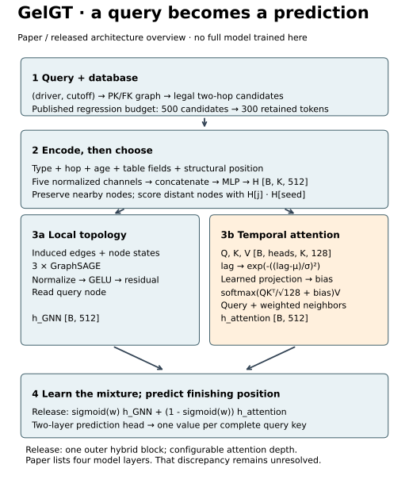
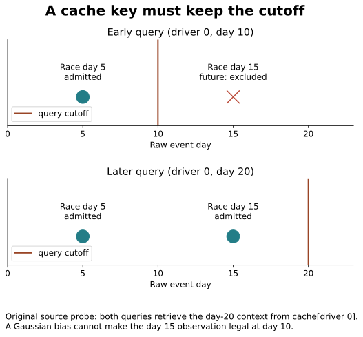
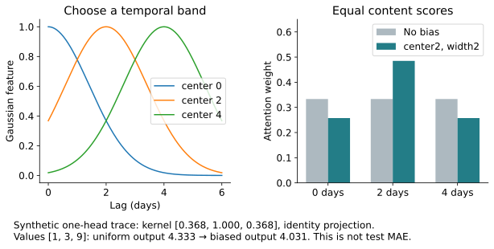

Year5 · Quarter3 · Lesson 184
GelGT: choose context, then weight time
See the idea · then trace the details
GELGT: keep local edges and attend farther away
Two parallel summaries meet at a learned gate.
1Encode and select tokens
Protect nearby nodes; rank distant candidates
Encode table, hop, time, field and structural information. Preserve nearby nodes, then use seed compatibility to select distant candidates.
2Compute two summaries
GraphSAGE branch ∥ temporal-attention branch
GraphSAGE follows retained edges. In parallel, attention compares tokens with time-dependent score bias.
3Gate the two routes
g × GNN + (1 − g) × attention → head
A learned sigmoid gate mixes the summaries before the regression head. The detailed lesson records source/paper depth differences.
Pause and predict: Can temporal attention recover a useful row that the sampler discarded?
No. Both branches operate on the admitted context; the missing row supplies no token to attend to.
Answer: No. Both branches operate on the admitted context; the missing row supplies no token to attend to.
One skill: separate access, selection and attention¶
A larger neighborhood helps only when it supplies useful information that was available for the query. By the end, you should be able to trace one GelGT prediction through those three decisions and reject a reproduction that confuses them.
This serves our mission: make relational-model gains defensible through visible computation and a valid experiment. Lesson 145 introduced the relational Transformer family; use the course map if that lesson's title has changed. Lesson 183's proposed pretraining experiment asks a different question: GelGT is trained directly on its downstream task. You do not need an unfinished previous lesson to follow this one.
Recall first. A primary key identifies a row. A foreign key connects it to a row in another table. A query cutoff is the time at which a prediction must be possible. An attention weight tells us how much an already-admitted value contributes; it does not grant access to that value.
Scope check. Selected GelGT reproduction INCOMPLETE_SOURCE_TEMPORAL_GATE. Fresh training NOT_RUN. Local source/mechanism audit and all 8,712 labels PASS. Cloud/API $0. Learner PENDING_WRITTEN_DEFENSE.
Why reach alone is insufficient¶
In plain terms. Imagine predicting a driver's next finishing position. One nearby race may connect the driver to a constructor, then to other drivers. A message-passing network transports information through these edges in successive layers. Compressing many paths into fixed-size vectors can lose distinctions. Attention can connect sampled tokens directly, but cannot use a useful row that the sampler discarded.
A token is a vector representing a sampled row for this query. A hop is one graph edge. GelGT addresses three bottlenecks: retain the local relational structure, choose useful distant nodes, then learn which time differences matter. It does not prove that every long-range problem disappears. Read the primary paper §§3.1–3.2.
Model architecture: database to one number¶


Start with a query. For regression, the published sampling budgets are 500 candidates and 300 retained tokens. B denotes a batch of queries, K the token count, and 512 the hidden width. Each token receives representations of its table type, hop distance, relative time, table fields and structural position. Normalization puts each channel on a controlled scale; concatenation joins channels side by side; a small multilayer perceptron mixes them into one vector.
Choose context after encoding. The seed is the query's own row. Nearby nodes are protected; more distant candidates are ranked using their dot product with the seed vector. A dot product multiplies matching coordinates and sums them. It is a learned compatibility score, not a guarantee of relevance.
Compute two summaries. Three GraphSAGE layers aggregate along retained edges, keeping local topology visible. In parallel, multi-head attention compares retained tokens and adds a time-dependent bias to each comparison. A head is a separate learned comparison subspace. The attention branch combines the query representation with a weighted neighbor summary.
Fuse and predict. The release learns a sigmoid gate: g = 1/(1+exp(-w)), between zero and one. It mixes g × GNN + (1−g) × attention; a two-layer head predicts one finishing-position value. The full released model and trainer appear in the notebook appendix. The paper/source depth discrepancy remains explicit in the protocol ledger.
Mechanism 1: preserve a legal relational route¶
Worked example. Driver 0 connects to races on days 5 and 15. At cutoff day 10, only day 5 is available under a strict prior-time rule. At day 20, both are available. These are different queries, even though the driver is unchanged.


Breadth-first sampling visits all one-hop neighbors before expanding two-hop neighbors. With a finite budget, it favors broad local coverage. The retained induced graph includes the original edges whose two endpoints survived. An invalid future node must be rejected before traversal; merely hiding its target is insufficient.
Scope check. The teaching sampler uses sorted ties, strict
< cutoff, and excludes untimed rows. The release uses<=and admits untimed rows. The paper contains both strict and non-strict descriptions. These policies are recorded separately, not silently equated. The course policy still needs ingestion histories before it establishes real deployment availability.
Mechanism 2: rank distant candidates without losing the seed¶
Worked example. Let the seed embedding be [1,0]. One-hop node A has embedding [0,1]; distant nodes B and C have [0.1,0] and [2,0]. Their seed dot products are 0, 0.1 and 2. With room for three tokens, protect seed and A, then retain C. B loses its slot.
| Token | Hop | Score | Three-token outcome |
|---|---|---|---|
| Seed | 0 | 1 | Protected |
| A | 1 | 0 | Protected |
| B | 2 | 0.1 | Removed |
| C | 2 | 2 | Retained |
This isolates semantic ranking: candidate graph, embeddings and budget stay fixed; only the distant score determines the last slot. If there are more protected nodes than slots, the course implementation raises an error. The release uses large sentinel scores and top-k; ties require care. After selection, remap edge indices to the new token positions.
Try before the lab. Reverse B and C's embeddings. Predict which edge disappears. Then decrease the budget to one: explain why quietly removing the seed would corrupt the prediction readout.
Mechanism 3: learn a preferred temporal band¶
In plain terms. Useful evidence need not be the newest evidence. A model may prefer a band of lags, such as roughly two days ago. The center says where that band sits; the width says how quickly preference falls away.
For a pair of tokens, Δt is their absolute time difference. A Gaussian feature is:
r(Δt) = exp(−((Δt − μ)/σ)²)
Here μ is the center and σ is a positive width. The release uses abs(raw_sigma)+0.00001. There is no factor of one-half in this kernel. Several such features are passed through a learned linear projection to obtain one bias per attention head. Projection weights may be negative, so a large Gaussian feature need not increase attention.
Worked example. With lags [0,2,4], center 2 and width 2, the squared normalized distances are [1,0,1]. Exponentiation gives [0.368,1,0.368]. For an illustrative identity projection and equal content scores, softmax converts these biases into weights that sum to one. Softmax exponentiates each score and divides by the sum of the exponentials.


The complete operation. Learned query and key vectors produce content scores QKᵀ/√d_head; d_head is the width of one head. Add the temporal bias, apply softmax, and take the weighted sum of the value vectors V. This changes contribution, not temporal legality. The source-executed lab checks this entire attention layer against explicit matrix arithmetic and compares input gradients.
Predict an intervention. Set projection to zero. The temporal contribution should disappear. Set it to minus one: the preference reverses. This is why a special-case scalar kernel calculation cannot establish an unconditional performance gain or a universal attention-ratio theorem for every trained projection.
Reproduction: a failed prerequisite is evidence¶
Named target. GelGT v2 Table 2, rel-f1/driver-position: reported test MAE 3.7345 ± 0.1200. Mean absolute error averages the absolute distance between predictions and labels; lower is better. We have not produced a new model MAE. The official source is pinned, rather than following a moving branch.
What ran. All nine cached database tables and all three task splits are authenticated. SQL reconstructs every target from raw race-result rows. Original sampling functions execute on a temporal counterexample. Original attention executes on controlled tensors; independent arithmetic checks outputs and gradients. These checks have different evidence boundaries.
| Split | Complete queries | Entity-only entries | Lost distinct entries |
|---|---|---|---|
| train | 7,453 | 771 | 6,682 |
| val | 499 | 47 | 452 |
| test | 760 | 56 | 704 |
All labels reconstruct with maximum error 0. Original attention: maximum forward error 4.44×10⁻¹⁶ and input-gradient error 2.15×10⁻¹⁵ in a float64, dropout-zero controlled test. Synthetic source probe: 2 queries → 1 cache entry, admitting one future node to the early query.
Why the gate fails. The release's context dictionary uses S[table][entity], then retrieves that entry for every matching entity in a 10,000-row chunk. Each complete F1 split fits within one chunk. The later query overwrites the earlier entry. The synthetic source execution demonstrates that this can pass a future race to an earlier query. The stored lag is relative to the later cutoff, so it may still look nonnegative.
What the counts mean. Cache collisions count lost distinct query entries, not observed future-row occurrences across the complete database. We did not run the full graph materialization, training, or full-population context audit after this blocker. Correct labels do not imply correct features.
What would permit a future experiment. Preserve full query keys through sampling and caching; authenticate per-query raw timestamps; settle padding, fitting scope, evaluation dropout, source/paper configuration and seed aggregation; then measure the full cost before dispatch. A repaired release defines a new declared protocol. It cannot be described as an unchanged historical reproduction.
Scope check. The aggregate ceiling is $10 including retries and verification, with a planned stop at $8 and $2 reserve. No paid pilot ran because the scientific gate failed earlier. Full reproduction remains INCOMPLETE. Nothing here changes the learner's mastery record or claims deployment.
Lab: implement, intervene, defend¶
Download the student notebook, inspect the executed solution, or use the quick reference. The portable notebook embeds the data, source and figures. It needs Python, NumPy, pandas, PyArrow, DuckDB and PyTorch; live Colab is NOT_CHECKED.
- Implement strict two-hop temporal sampling; test earlier and equal cutoffs.
- Implement the Gaussian feature; compare it against the actual release's bias and attention arithmetic.
- Implement complete-key MAE; reject duplicate, missing and nonfinite predictions.
- Run the source counterexample and all 8,712 label reconstructions. Change one assumption and explain the boundary it affects.
The synthetic attention output is not a prediction benchmark. The notebook deliberately leaves fresh training gated off. Inspect the full protocol and exact commands and machine-readable evidence.
Bridge forward. A temporally valid prediction is still not a causal intervention. Lesson 185 asks whether acting on a prediction changes an outcome. First make the information contract correct; then ask what decision the model supports.
Ask the teaching agent about any unclear step, or paste your written defense for feedback. Preparing this lesson does not count as completing it.